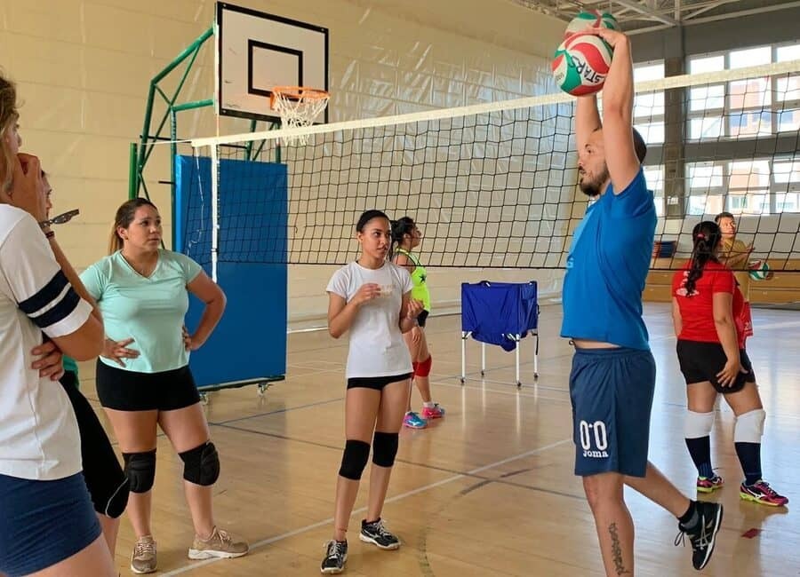
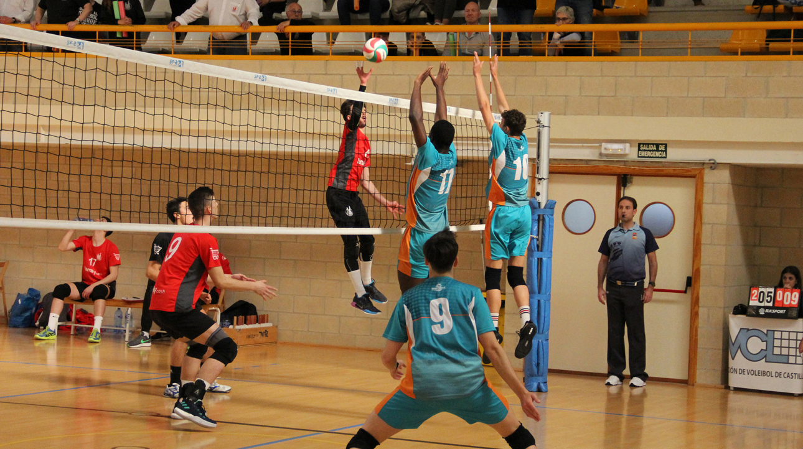
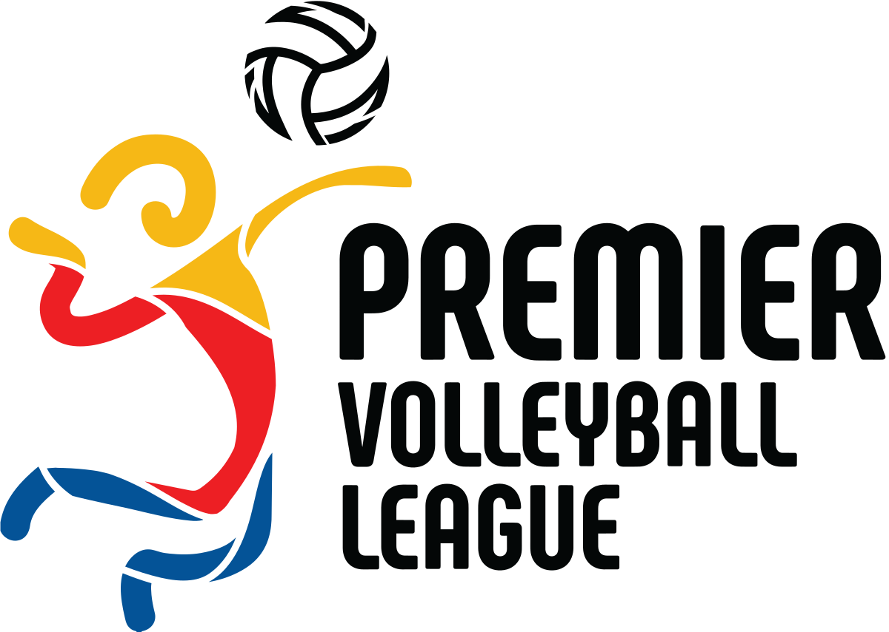

Sesiones regulares de entrenamiento para personas de cualquier nivel que buscan mejorar sus habilidades y juego en un ambiente divertido y amigable. Principalmente dirigido a adultos, pero abierto a todas las edades, su naturaleza informal significa que no hay compromisos estacionales.
Diseñado para desarrollar las habilidades de niños y niñas en edad escolar de primaria y secundaria, el programa JTS es el complemento perfecto para los entrenamientos escolares o para aquellos que se inician en este deporte. ¡Nuestros entrenadores ayudan a desarrollar habilidades, juegos y estado físico!
PVL es el nivel más alto de voleibol competitivo semanal en QLD, con 4 divisiones senior en oferta tanto para hombres como para mujeres que se juegan durante la temporada de invierno.
La Junior Premier Volleyball League es una liga de clubes competitiva para las divisiones U19, U17 y U15, tanto para niños como para niñas, que se juega de junio a agosto de cada año.